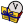
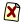
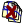

Menú Archivo: Nuevo...
Menú Archivo: Nuevo...
Si se está trabajando sobre un proyecto creará uno o más nuevos archivos de acuerdo a la opción que se seleccione posteriormente en la ventana del asistente, y lo(s) agregará al proyecto.
Si no hay ningún proyecto abierto, su comportamiento depende de cómo lo configure el usuario en la casilla Accion para Nuevo Archivo de la pestaña General del cuadro de Preferencias (Archivo->Preferencias... ó Ctrl+P). Las posibles acciones son: crear un archivo en blanco, crear una archivo a partir de una plantilla predeterminada, mostrar el asistente (esta es la opción por defecto).
Si lo que se desea crear es un proyecto, se puede seleccionar la opción correspondiente en el cuadro del Asistente, o utilizar la opción Nuevo Proyecto... del menú Archivo.
Temas relacionados: Asistente para Nuevo Archivo, Menú Archivo: Nuevo Proyecto...
 Menú Archivo: Nuevo Proyecto...
Menú Archivo: Nuevo Proyecto...
Muestra el asistente para crear un nuevo proyecto. Un proyecto, a diferencia de un archivo simple, puede agrupar varios archivos (fuentes, cabeceras y otros), y permite definir opciones de compilación y enlazado más específicas (parámetros, librerías, directorios, etc).
Temas relacionados: Asistente para Nuevo Archivo, Menú Archivo: Nuevo...
 Menú Archivo: Abrir/Agregar al proyecto...
Menú Archivo: Abrir/Agregar al proyecto...
Permite abrir un proyecto o uno o más archivos. Si se está trabajando sobre un proyecto, preguntará al usuario si desea agregar el/los archivo(s) seleccionados al proyecto. Si el archivo seleecionado para abrir es un archivo de proyecto (extensión .zpr) se cerrará el proyecto actual si existe y se abrirá el proyecto seleccionado.
Menú Archivo: Fuentes abiertos recientemente
Muestra la lista de los últimos archivos abiertos como programas simples (fuera de proyectos). La cantidad de elementos de la lista se puede configurar en el diálogo de Preferencias. Notar que cuando se abre un archivo para agregarlo a un proyecto, éste no se tiene en cuenta para esta lista, ya que perenece al proyecto. Tampoco se consideran los archivos abiertos mediante las opciones especiales Abrir seleccionado y Abrir h/cpp complementario.
Temas relacionados: Menú Archivo: Abrir... , Menú Archivo: Abrir Seleccionado, Menú Archivo: Abrir h/cpp Complementario, Diálogo Preferencias

Menú Archivo: Proyectos abiertos recientemente
Muestra la lista de los últimos proyectos abiertos. La cantidad de elementos de la lista se puede configurar en el diálogo de Preferencias. Notar que cuando se abre un archivo para agregarlo a un proyecto, éste no se tiene en cuenta para esta lista, ya que perenece al proyecto. Tampoco se consideran los archivos abiertos mediante las opciones especiales Abrir seleccionado y Abrir h/cpp complementario.
Temas relacionados: Menú Archivo: Abrir... , Menú Archivo: Abrir Seleccionado, Menú Archivo: Abrir h/cpp Complementario, Diálogo Preferencias
Menú Archivo: Guardar
Guarda el archivo actual. Si el archivo ya tenía nombre, se guarda con ese mismo nombre (es decir, se actualiza).
Temas relacionados: Menú Archivo: Guardar Como... , Menú Archivo: Guardar Todo... , Menú Archivo: Guardar Proyecto...
Menú Archivo: Guardar Como...
Guarda el archivo actual, pudiendo seleccionar el nombre y la ubicación nuevamente.
Temas relacionados: Menú Archivo: Guardar , Menú Archivo: Guardar Todo... , Menú Archivo: Guardar Proyecto...
Menú Archivo: Guardar Todo
Guarda todos los archivos actualmente abiertos, y la configuración del proyecto si existe.
Temas relacionados: Menú Archivo: Guardar , Menú Archivo: Guardar Como... , Menú Archivo: Guardar Proyecto...
Menú Archivo: Guardar Proyecto
Guarda la composición y configuración del proyecto. Es decir, actualiza el archivo .zpr, que contiene las listas de archivos que componen el proyecto, todas las opciones del mismo (generales, de compilación, y de enlazado) y el estado actual de la edición (que archivos están abiertos y en que líneas).
Temas relacionados: Menú Archivo: Guardar , Menú Archivo: Guardar Como... , Menú Archivo: Guardar Todo...
Menú Archivo: Exportar a HTML...
Crea un archivo HTML (solicitando previamente la ubicación y el nombre del mismo) a partir del código fuente actual, respetando el coloreado de sintaxis seleccionado.
Temas relacionados: Menú Ver: Colorear Sintaxis
Menú Archivo: Imprimir...
Menú Archivo: Recargar...
Reabre el fuente actual. Es decir, que vuelve a la última versión guardada en diso. Esta opció puede servir para descartar los cambios realizados, o para actualizar un archivo cuando algún programa externo al entorno lo ha modificado.

Menú Archivo: Cerrar
Cierra el archivo actual.
Temas relacionados: Menú Archivo: Cerrar Proyecto... , Menú Archivo: Cerrar todo
Menú Archivo: Cerrar Todo
Cierra el archivo actual.
Temas relacionados: Menú Archivo: Cerrar Proyecto... , Menú Archivo: Cerrar

Menú Archivo: Cerrar Proyecto
Cierra el proyecto actual. Si la opción Guardar siempre el proyecto al salir de la pestaña General del cuadro de Preferencias está seleccionada, se guardará el proyecto antes de cerrarlo; en caso contrario, si se modificó el proyecto se preguntará al usuario. Notar que guardar el proyecto no incluye guardar el contenido los archivos que contiene el proyecto; es decir, guardar el proyecto guarda las listas de archivos, las configuraciones y el estado actual de la edición. Si los archivos que contiene el proyecto fueron modificados, se preguntará si guardarlos independientemente de si se guardó o no el proyecto, ya que cuando se cierra el proyecto también se cierran todos los archivos abiertos.
Temas relacionados: Menú Archivo: Cerrar, Menú Archivo: Cerrar todo
Menú Archivo: Configuracion del proyecto...
Muestra un cuadro de diálogo para realizar configuraciones varias sobre un proyecto (ej: nombre, tipo de tabulado, archivos especiales, etc).
 Menú Archivo: Preferencias...
Menú Archivo: Preferencias...
Muestra el cuadro de diálogo de preferencias generales de ZinjaI.
Temas relacionados: Diálogo Preferencias
Menú Archivo: Salir
Cierra el proyecto y los archivos abiertos y sale del programa. Si el proyecto o los archivos fueron modificados, pregunta al usuario si desea guardar los cambios antes de salir (a excepción del proyecto cuando la opción Guardar siempre el proyecto al salir de la pestaña General del cuadro de Preferencias está seleccionada, en cuyo caso lo guarda automáticamente sin preguntar).